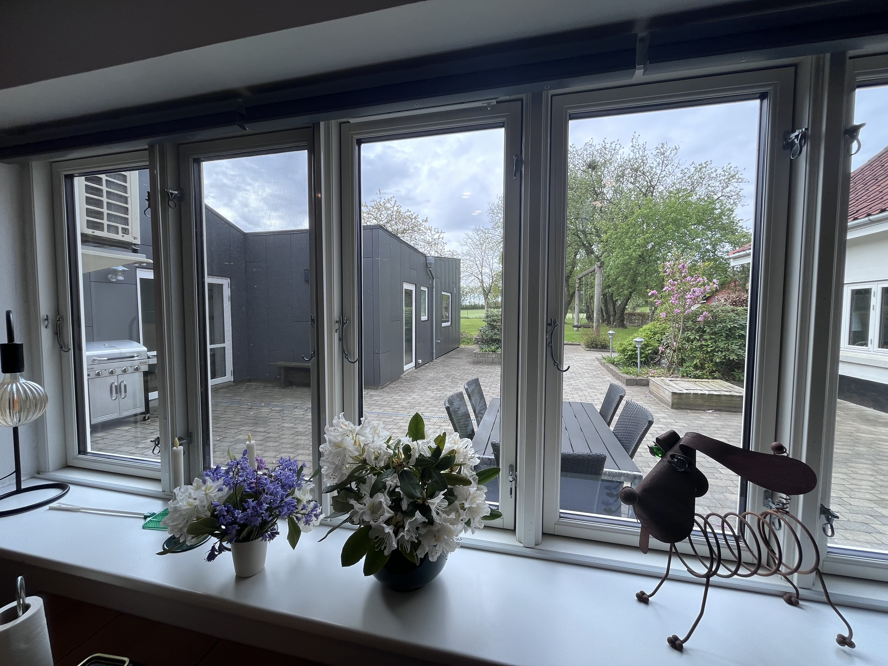
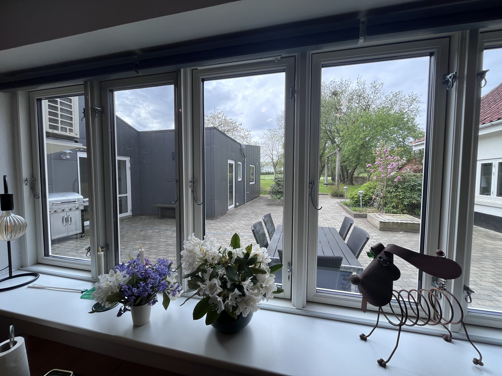
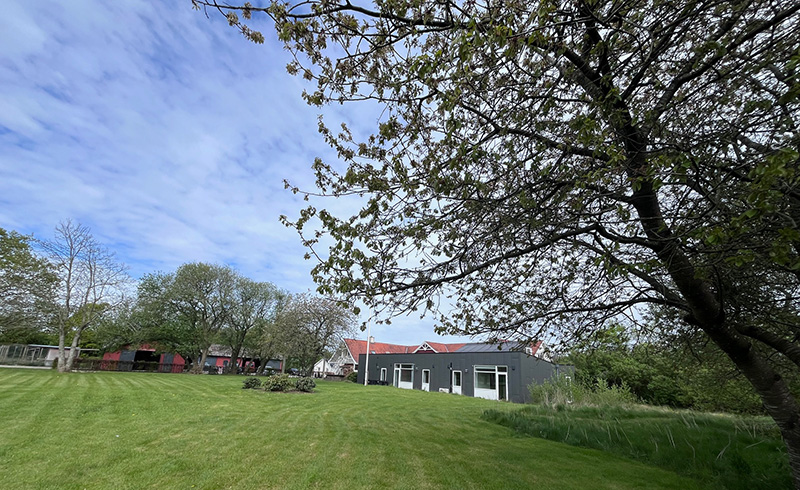
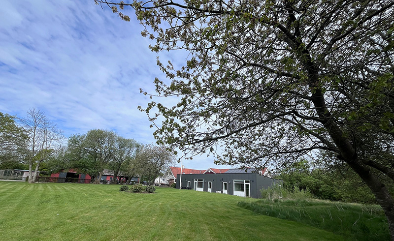

Historie
Søttruphus blev grundlagt af et forældrepars dybe kærlighed og ønske om at finde et sted, hvor deres barn kunne trives. Efter mange forgæves forsøg på at finde et botilbud, der kunne imødekomme barnets behov for både støtte og tryghed, indså de, at de måtte skabe noget selv. De besluttede at oprette et hjem, der kunne give mennesker med autisme den omsorg og respekt, de fortjener. Med et stort hjerte og en klar vision oprettede de Søttruphus som en fond – et sted, hvor beboerne kunne føle sig trygge, forståede og støttede. Deres mål var ikke bare at tilbyde et botilbud, men at skabe et hjem, hvor hver enkelt beboer kunne udvikle sig i et miljø, der var tilpasset deres unikke behov.
Søttruphus er i dag et levende bevis på deres vision. Her er det ikke kun et sted at bo, men et hjem, hvor beboerne føler sig set, hørt og værdsat for den, de er, og hvor de har mulighed for at blomstre og trives.

Hvem er vi?
Søttruphus er et botilbud for mennesker med autisme, eventuelt i kombination med andre former for funktionsnedsættelse. Vi er beliggende i naturskønne omgivelser i Vesthimmerlands Kommune. Søttruphus drives som en selvejende institution og har plads til i alt otte beboere. Vi har døgnbemanding året rundt, og alle beboere har fast bopæl på stedet. Botilbuddet er indrettet i en tidligere landejendom med en stor have og en solrig terrasse, hvilket giver gode rammer for ro, tryghed og trivsel i hverdagen.
Søttruphus modtager voksne borgere efter Serviceloven §107 og §108.
Serviceloven § 107: Søttruphus tilbyder midlertidige botilbud til voksne med nedsat psykisk funktionsevne, f.eks. borgere med autismespektrumforstyrrelser.
Serviceloven § 108: Søttruphus tilbyder længerevarende botilbud til borgere med varigt behov for støtte og en struktureret hverdag.

Vores værdier
Tryghed
Vi skaber struktur og forudsigelighed, der giver ro og stabilitet.
Anerkendelse
Vi møder beboeren med respekt for den enkeltes livshistorie, perspektiv og oplevelse.
Respekt
Vi ser os selv som gæster i beboerens hjem og handler derefter.
Tillid
Vi skaber trygge relationer, hvor beboeren kan føle sig sikker og set som et helt menneske.
Selvstændighed
Vi understøtter beboerens ret til at træffe egne valg og tage ansvar for eget liv.
Udvikling
Vi støtter beboeren i at udvikle sig med udgangspunkt i egne ønsker, evner og drømme.
Livskvalitet
Vi arbejder for, at alle beboere skal opleve glæde, mening og fællesskab i deres dagligdag.
Visoner
Vores vision er at skabe et hjem, hvor hver beboer føler sig tryg, anerkendt og i stand til at udvikle sig i et miljø, der understøtter deres individuelle behov og drømme. Vi ønsker at være en institution, der ikke kun lever op til kravene for et botilbud, men som også er et sted, hvor beboerne trives og føler sig hjemme.
 

 


Personale

Faglige tilgange